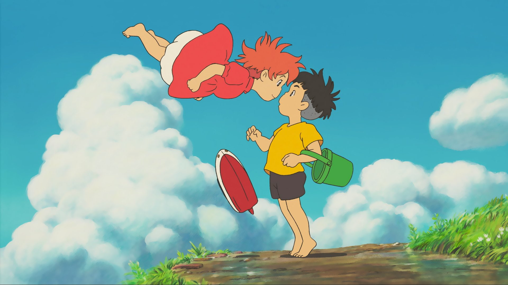

Fujimoto, un mago/scienziato un tempo umano, vive sott'acqua insieme a sua figlia, Brunilde, e alle sue numerose sorelle più piccole (creature simili a pesci con viso umano). Mentre sono in gita con un sottomarino, Brunilde si allontana dalla famiglia, e galleggia via sotto la cupola di una medusa. Dopo un incontro con un peschereccio, si ritrova sulla riva di una piccola città di pescatori, rimanendo intrappolata in un barattolo di vetro dal quale viene salvata da Sōsuke, un bambino di cinque anni molto intelligente. Nel rompere il barattolo con una pietra, Sosuke si taglia, ma Brunilde lecca la sua ferita facendola guarire quasi all'istante. Sōsuke battezza la creatura con il nome "Ponyo", e promette di proteggerla. Nel frattempo, Fujimoto cerca freneticamente la figlia perduta, che crede essere stata rapita. Chiama i suoi spiriti delle onde per recuperarla, spezzando il cuore di Sōsuke. Ponyo/Brunilde e Fujimoto hanno una discussione, durante la quale la figlia si rifiuta di lasciare che il padre la chiami con il suo nome di nascita, dichiarando il suo desiderio di essere conosciuta come "Ponyo" e di diventare umana. Usando la sua magia, si fa crescere gambe e braccia e inizia a trasformarsi in un essere umano, un potere che le è stato conferito dal sangue della ferita di Sōsuke. Suo padre, allarmato, la costringe a tornare alla sua vera forma ed esce per chiamare la madre di Ponyo, Granmamare. Nel frattempo, Ponyo, con l'aiuto delle sue sorelle, si allontana dal sottomarino e usa inavvertitamente la sua magia per rendersi completamente umana. L'enorme quantità di magia che rilascia nell'oceano causa uno squilibrio nel mondo, causando uno tsunami e lasciando le navi alla deriva in mare. Ponyo torna da Sōsuke, che è stupito e felicissimo di vederla, e racconta a sua madre, Risa, che Ponyo è tornata ed è ora una bambina. Risa permette a Ponyo di restare a casa loro per il momento, e aspettano che la tempesta passi insieme a casa di Sōsuke. Preoccupata per gli abitanti della casa di riposo in cui lavora, Risa parte per controllarli, promettendo a Sōsuke che tornerà a casa il prima possibile. Granmamare arriva al sottomarino di Fujimoto. Il padre di Sōsuke, Kōichi, la vede viaggiare e la riconosce come la Dea della Misericordia. Fujimoto nota che la luna sembra star uscendo dalla sua orbita e che i satelliti stanno precipitando come stelle cadenti, sintomi del pericoloso squilibrio della natura. Granmamare dichiara che se Sōsuke supererà un test, Ponyo potrà vivere come un essere umano e l'ordine del mondo sarà ripristinato. Fujimoto, ancora preoccupato, le ricorda che se Sōsuke fallisse il test, Ponyo si trasformerebbe in schiuma di mare. Sōsuke e Ponyo si svegliano per scoprire che la maggior parte della terra intorno alla casa è stata coperta dall'oceano. Poiché è impossibile per Risa tornare a casa, i due bambini decidono di andarla a cercare. Con l'aiuto della magia, Ponyo trasforma la nave giocattolo di Sōsuke in una imbarcazione a grandezza naturale, e i due bambini si spostano attraverso l'oceano appena formatosi. Quando Ponyo e Sōsuke arrivano nella foresta, tuttavia, Ponyo è evidentemente molto stanca e si addormenta, solo per essere svegliata da Sōsuke, che la implora di accendere una seconda candela prima che quella che sta alimentando la loro barca si spenga. Ponyo poi si assopisce più volte prima di riuscire a concentrarsi abbastanza per fare la candela, che poi si spegne. Ponyo infine sviene e Sōsuke si trova costretto a spingere la barca a riva, giusto in tempo per scoprire che la barca, priva della magia di Ponyo, sta tornando alle sue dimensioni originali di giocattolo. Sōsuke trascina Ponyo a riva, dove trova la macchina abbandonata di Risa. Ponyo poi si sveglia e i due continuano la ricerca di Risa, entrando in un tunnel nel quale Ponyo ritorna ad essere un pesce a causa dell'uso eccessivo dei suoi poteri magici. Nel frattempo, Risa e le anziane abitanti della casa di cura, temporaneamente in grado di respirare l'acqua grazie a Granmamare, stanno aspettando sotto la superficie per l'arrivo di Ponyo e Sōsuke. Sōsuke e Ponyo incontrano Fujimoto, che avverte il ragazzo che l'equilibrio della natura è in pericolo e lo implora di restituirgli Ponyo. Sōsuke dubita di Fujimoto e tenta di fuggire, ma i due bambini vengono rapidamente catturati e Fujimoto li porta alla casa di riposo. Sōsuke si ricongiunge a Risa e incontra Granmamare, con la quale Risa ha appena avuto una lunga conversazione privata. Granmamare chiede a Sōsuke se sia in grado di amare Ponyo, a prescindere dal suo essere un pesce o un essere umano. Sosuke risponde che ama Ponyo in qualsiasi sua forma. Granmamare dice quindi a sua figlia che scegliendo una volta per tutte di essere umana, dovrà rinunciare ai suoi poteri magici. Ponyo è d'accordo, quindi Granmamare la racchiude in una bolla e la dà a Sōsuke, informandolo che baciare la bolla completerà la trasformazione di Ponyo. L'equilibrio della natura è così ripristinato e le navi precedentemente bloccate tornano in porto. Fujimoto rispetta la scelta di sua figlia di diventare un essere umano, avendo deciso che può affidare a Sōsuke il benessere di Ponyo. Quest'ultima bacia dunque Sōsuke, completando la sua trasformazione in essere umano.